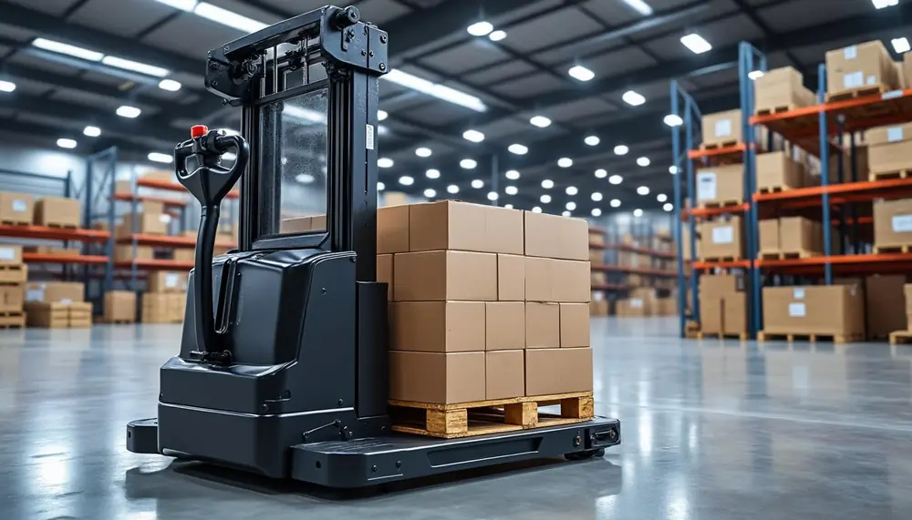

Vous perdez du temps avec des tâches qui pourraient être automatisées ?
Si vos équipes déplacent encore les charges à la main, nous pouvons chercher avec vous ce qu'un robot peut prendre en charge.
U / VOTRE SITUATION / 001
01
Vos salariés passent trop de temps à transporter des charges
02
Vos zones de production et de stockage communiquent mal
03
Vous voulez réduire les accidents et les efforts physiques
04
Vous avez besoin de produire plus sans recruter davantage
02 / Quelle solution choisir ?
AGV ou AMR ? Nous vous aidons à choisir le robot adapté.
Le bon choix dépend de vos charges, de vos trajets et de la façon dont votre site fonctionne aujourd'hui.
AGV — Automated Guided Vehicle
Un AGV suit un itinéraire défini à l'avance grâce à un guidage laser, filoguidé ou à des repères au sol. Robuste et continu, il est idéal pour les trajets fixes et les flux répétitifs de palettes et de charges lourdes.
Un AMR cartographie son environnement et recalcule sa trajectoire en temps réel. Souple, il accompagne les environnements qui changent, avec une infrastructure minimale et un déploiement progressif.
Pour qui
Environnements variables, flux mixtes, déploiement par étapes
Points clés
Navigation autonome, obstacles et personnes, évolutivité

Pour les flux répétitifs
AGV industriel — robustesse & continuité
Transport de palettes et charges lourdes sur des trajets connus, avec supervision centralisée et intégration aux systèmes existants.
24/7Une continuité opérationnelle sans interruption
+35%Objectif de productivité des flux internes*
-30%Incidents liés à la manutention manuelle*
*Ordres de grandeur communiqués dans le brief client, à confirmer par l'étude de votre site.
04 / Comment ça marche ?
Nous avançons avec vous, étape par étape.
01
Comprendre
Nous regardons vos trajets, vos charges et les difficultés rencontrées par vos équipes.
02
Proposer
Nous vous expliquons quelle solution peut répondre à votre besoin et pourquoi.
03
Installer
Nous installons le système, formons vos équipes et restons présents au démarrage.
05 / Questions fréquentes
AGV, AMR : les réponses claires avant de décider.
Quelle est la différence entre un AGV et un AMR ?
Un AGV (Automated Guided Vehicle) suit un itinéraire prédéfini, matérialisé par un fil, une bande ou des repères au sol : il est très robuste pour des trajets fixes et répétitifs.
Un AMR (Autonomous Mobile Robot) cartographie son environnement et recalcule sa trajectoire en temps réel : il s'adapte aux changements de cadence, de référence ou d'organisation, avec une infrastructure minimale.
Comment choisir entre un AGV et un AMR pour mon site ?
Le choix dépend de vos charges, de vos trajets et de la façon dont votre site fonctionne aujourd'hui : nature et poids des charges, longueur et variabilité des parcours, cadence, présence d'obstacles ou de personnes, systèmes de gestion existants.
Nous commençons par un diagnostic du site, puis nous expliquons quelle solution répond au besoin et pourquoi, sans jargon.
Quelles charges un AGV ou un AMR peut-il transporter ?
Selon la solution retenue : palettes, bacs, chariots et charges lourdes entre zones de production, de stockage et d'expédition. La charge admissible, le mode de prise (levage, remorquage, plateau) et les dimensions sont validés pendant l'étude de votre site.
Faut-il modifier le sol ou l'infrastructure de mon site ?
Cela dépend de la technologie. Certaines solutions d'AGV s'appuient sur un guidage laser ou filoguidé qui suppose des repères ou une infrastructure dédiée ; un AMR fonctionne avec une infrastructure minimale grâce à sa navigation autonome. L'audit du site permet d'identifier les aménagements réellement nécessaires.
Un AGV ou un AMR peut-il être connecté à mon WMS, mon ERP ou mon MES ?
Oui. Les solutions que nous déployons sont supervisées et interfacées avec les systèmes existants : WMS, ERP, MES et systèmes de production, afin que les missions de transport suivent les ordres réels de votre site.
Comment se passe une étude de projet avec Ubepro ?
En trois étapes : comprendre vos trajets, vos charges et les difficultés rencontrées par vos équipes ; proposer la solution adaptée en expliquant le pourquoi de chaque choix ; installer le système, former vos équipes et rester présent au démarrage.
Le premier échange est sans engagement.
06 / Demander une étude
Parlons de vos difficultés de manutention.
Vous ne savez pas quel robot choisir ou par où commencer ? Décrivez-nous votre situation : nous vous aiderons à voir si l'AGV ou l'AMR peut vous être utile.
Étude en 2 minutes · premier échange sans engagement
Votre besoin et votre type de site
La solution envisagée — ou « je ne sais pas encore »
Votre enjeu principal
Vos préférences
Vos cookies, votre choix.
Les cookies essentiels mémorisent vos choix. Les catégories mesure d’audience et marketing sont facultatives. Vous pouvez accepter, refuser ou personnaliser votre choix, puis le modifier à tout moment.